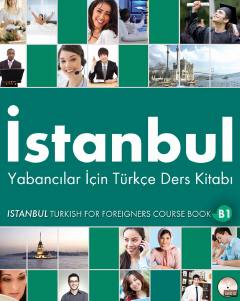

İYChet elliklar uchun turk tili B1 darajasidagi amaliy mashqlar to'plami.
Ushbu kitob chet elliklar uchun turk tilini o'rgatishga mo'ljallangan B1 darajasidagi amaliy qo'llanmadir. Unda turli mavzular, jumladan, ish dunyosi, sog'liq va ta'lim hayoti bo'yicha grammatik va leksik mashqlar jamlangan.